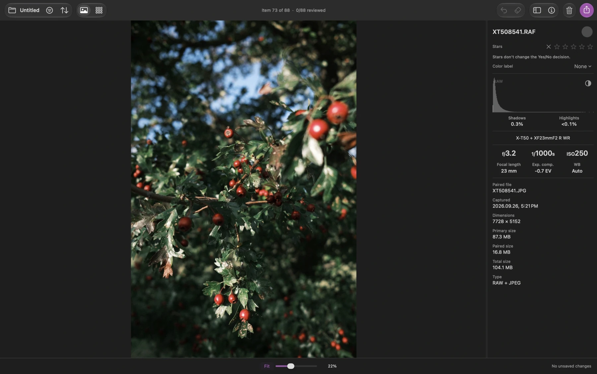

find what you
want to keep
a free media culler for Mac. review photos, video and audio, then export your keepers
download for MacApple silicon macOS 14 or later

read the walkthrough
- open a folder or memory card. Gallery shows one photo at a time
- press g to switch to Grid and compare the items
- press s to inspect a photo at 100%
- mark yes with f or no with d. stars and color labels are separate decisions
- filter to yes to see your keepers
- open Export and review the copy preview. the example has 7 items comprising 14 RAW+JPEG files. copying keeps the originals at the source
start with a folder
photos, video and audio, ready to review. no catalog import
make your choices
mark yes or no, add stars and color labels
take your keepers
export your favourites. copies by default, originals left in place
a few keys
keep you moving
mark a keeper and move to the next undecided item
the details,
when you need them
photos, video and audio
review photos and play video and audio in Gallery, with keyboard playback controls
common camera RAW files, JPEG, TIFF, PNG, HEIC, WebP and AVIF are supported. optionally group matching RAW+JPEG files as one review item, with separate decisions, stars and color labels
look closely. compare carefully
inspect at true 100% zoom, check a histogram and clipping information, or view a phone-sized preview. optional quality cues flag high ISO, slow shutter speeds and dark or bright areas
find exact duplicates, likely similar photos and capture bursts locally on your Mac. analysis never changes ratings or files automatically
filter, sort and organise
filter by decisions, stars, labels, dates, folders, camera details and file types. your decisions save automatically, so you can reopen the folder and continue
Organize Source Folder previews a folder structure before moving files. Rename Files previews new names and keeps recognised RAW+JPEG/XMP families together. both support undo during the open session
export and clean up with control
export copies by default. you can also choose Move on the same drive, route copies to multiple folders, or write XMP sidecars for compatible editing apps
marking no does not trash a file. Clean Up is a separate action that sends unwanted files to the macOS Trash. undo is available during the open session while the files remain in Trash
local, free and open source
your media stays on your Mac. Louppe has no account or telemetry, and is free and open source under the MIT License
the main review workflow works with the keyboard, and VoiceOver is supported
explore the source code